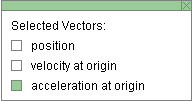
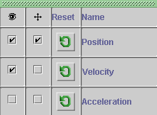

There are four basic control buttons. They are, from left to right:
-
 /
/ Play/Pause. Clicking
Play/Pause. Clicking  starts the
motion.
starts the
motion.
After Play has been clicked, the button will change into the Pause button
 .
.
Click it if you want to take a 'snapshot' of the motion at a given instant. To resume the motion, click Play once more.
-
 Step. Lets you step through the motion in equal
time steps.
Step. Lets you step through the motion in equal
time steps.
-
 Rewind. Resets the simulation to the starting point
with the previously chosen system parameters. After
clicking Rewind, click Play to restart the motion.
Rewind. Resets the simulation to the starting point
with the previously chosen system parameters. After
clicking Rewind, click Play to restart the motion.
-
 Reset. Resets the applet to its default setting.
Reset. Resets the applet to its default setting.
Adjustments in the system parameters can only be made after first clicking REWIND or RESET.



Selecting the Vectors toggle button displays the vector panel illustrated above. By checking any of the three checkboxes on the panel, different vectors can be displayed. In the example above, the acceleration vector is checked.
The significance of the three vectors in the vector panel is explained in more detail in ShowMe. Let it be mentioned here briefly that the pendulum bob's motion is to a good approximation the same as the horizontal component of a uniform motion of a point on a reference circle. The applet simulates this circular motion if you select the Reference Circle button. See Item 4 below. The three vectors named in the vector panel apply to the motion of the point on the reference circle. All are shown with their tail ends fixed at the center of that circle.
The acceleration vector is represented in orange. See the image at the top. The vector's horizontal component, which approximates the acceleration of the pendulum bob, is shown in pale orange. To display this horizontal component, select the Components button. See Point 3 below.
The following vectors and their horizontal components can be displayed:
- position: position vector of point revolving in reference circle and/or the corresponding x-component vector; color: cyan
- velocity at origin: velocity of point revolving in reference circle and/or the corresponding x-component vector; color: magenta
- acceleration at origin: acceleration of point revolving in reference circle and/or the corresponding x-component vector; color: magenta
Summary
To display a vector belonging to the point revolving in the reference circle:
select the Reference Circle toggle buttonand check the relevant box in the vector panel.
To display a horizontal component vector (in pale colors):
select the Components toggle buttonand check the relevant box in the vector panel.

The Components toggle button displays/hides the horizontal component vectors of any reference-circle vectors (position, velocity, acceleration) checked in the vector panel described in Point 2. The component vector of acceleration (pale orange) is shown in the image at the top.
These component vectors are the position, velocity, and acceleration vectors of the pendulum bob in the shm-approximation to the pendulum bob's motion.
Items are color-coded: cyan for position, magenta for velocity, orange for acceleration. The component vectors are in paler colors than the reference circle vectors.
The Reference Circle toggle button displays or hides the green reference circle, which is the path of the uniformly revolving point that gets projected onto the oscillating pendulum bob.
The values 0, π/2, π, etc., indicated around the perimeter of the reference circle, are radian measures of the location angle θ of the uniformly revolving point.


The Data toggle button either displays or hides the Data box shown below. If you click on the Data box and drag, you can move it anywhere on the screen or even off the screen.

The following data are displayed in the Data box. Distinguish between the data pertaining to the motion of the pendulum bob and that of the point in the reference circle.
Top half. Constants of the motion and initial conditions:
- A: amplitude
- ω: angular frequency of both pendulum and reference circle motions
- δ: phase angle; equal to θ(0) (see below)
- x(0): x-component of the pendulum bob's displacement from equilibrium at t = 0
- vx(0): x-component of the pendulum bob's velocity at t = 0
- ax(0): x-component of the pendulum bob's acceleration at t = 0
- β(0): angle of deflection of pendulum string from the vertical at time time t = 0; the angle is positive if the deflection is to the right, negative if to the left
Note about δ = θ(0), x(0), and β(0). The phase angle δ and the initial linear and angular displacements x(0) and β(0) can be chosen before starting the motion by dragging the pendulum bob or the point in the reference circle. The initial velocity vx(0) and acceleration ax(0) will be adjusted accordingly.
Bottom half. Values of time-dependent quantities at time t:
- t: time elapsed
- θ(t): position angle of point (tip of the blue position vector) revolving on green reference circle, measured in the positive sense from the horizontal reference direction in grey; values of θ in radian are indicated on the perimeter of the reference circle; θ(0) is called the phase angle and is denoted by δ
- x(t): x-component of the pendulum bob's displacement from equilibrium at time t; represented by a horizontal blue arrow when the Components button is selected
- vx(t): x-component of the pendulum bob's velocity at time t; represented by a horizontal pink arrow when the Components button is selected
- ax(t): x-component of the pendulum bob's acceleration at time t; represented by a horizontal orange arrow when the Components button is selected
- β(t): angle of deflection of pendulum string from the vertical at time time t

This toggle button will either display or hide the graph panel which lets you select the graphs you want to have displayed. The graph panel is shown below.

The panel lets you select the following actions, for each of the three quantities of position, velocity, acceleration:
-
 Visibility checkbox. When this
is selected, the graph of the respective variable
will be displayed.
Visibility checkbox. When this
is selected, the graph of the respective variable
will be displayed.
If the panel is checked as illustrated above, the position and velocity graphs will be displayed.
-
 Move graph checkbox. When this is selected, the
graph of the respective variable can be dragged
anywhere in the applet window.
Move graph checkbox. When this is selected, the
graph of the respective variable can be dragged
anywhere in the applet window.
If the panel is checked as illustrated above, the position graph can be moved.
-
 Reset graph button. When this button is clicked,
any graphs of the respective variable will be erased,
but the axes will remain visible.
Reset graph button. When this button is clicked,
any graphs of the respective variable will be erased,
but the axes will remain visible.
In each graph, the time t is on the horizontal axis in units of seconds (s). The time axis has divisions that are fractions (or multiples) of π, e.g., π/2. The division π/2 indicates π/2 s, not π/2 rad, etc.
The Projection toggle button displays/hides color-coded
vertical lines connecting any corresponding quantities on
display, e.g., the
blue line connecting the center of the
pendulum bob to the revolving point on the reference circle, or the
orange line connecting the tip of the pale orange arrow
(representing the horizontal acceleration component vector) to
the tip of the orange arrow (representing the
acceleration of the point on the reference circle). See the diagram below.


The Zoom toggle button displays the vectors, their components, and corresponding graphs either in standard size or reduced size. The size reduction affects the three variables of position, velocity, and acceleration as follows.
- Position: no reduction.
- Velocity: reduction by a factor of 2.
- Acceleration: reduction by a factor of 4.

There are four sliders in all. They are described below, in the order from left to right.
You can adjust a slider setting either by dragging the slider tab or by entering an exact value in the slider input dialog.
To enter an exact value, click on the Input Dialog button
 of the slider to open the dialog. The
dialog for the Amplitude slider is illustrated below. The
range in which values can be entered, from 0.17 m to 0.52 m
in this case, is indicated above the data entry field.
of the slider to open the dialog. The
dialog for the Amplitude slider is illustrated below. The
range in which values can be entered, from 0.17 m to 0.52 m
in this case, is indicated above the data entry field.

Clicking on a slider to the left or right of the slider tab allows fine adjustment of the slider setting.
-
Amplitude Slider. This slider lets you adjust the amplitude A of the pendulum bob's motion in the range from 0.17 m to 0.52 m, in steps of 0.52 m.
The radius of the reference circle is equal to the amplitude.
-
Mass Slider. This slider lets you adjust the mass m of the pendulum bob between 0.50 kg and 1.00 kg, in steps of 0.01 kg. (The pendulum string is assumed to be massless.)
-
Length Slider. This slider lets you adjust the length L of the pendulum in the range from 1.00 m to 2.00 m, in steps of 0.01 m.
-
g Slider. This slider lets you adjust the magnitude g of the acceleration due to gravity between 0 and 20.0 m/s2, in steps of 0.1 m/s2.